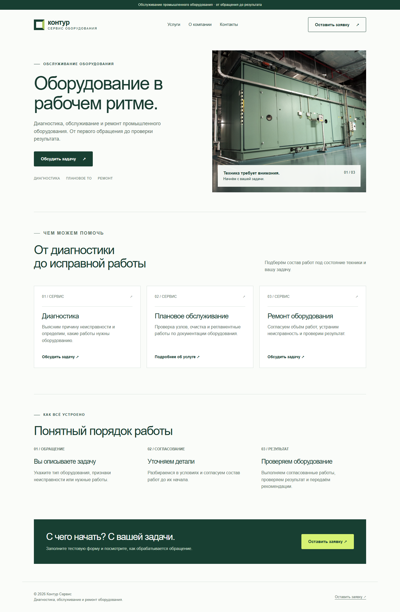
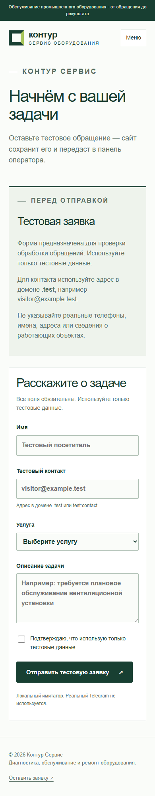
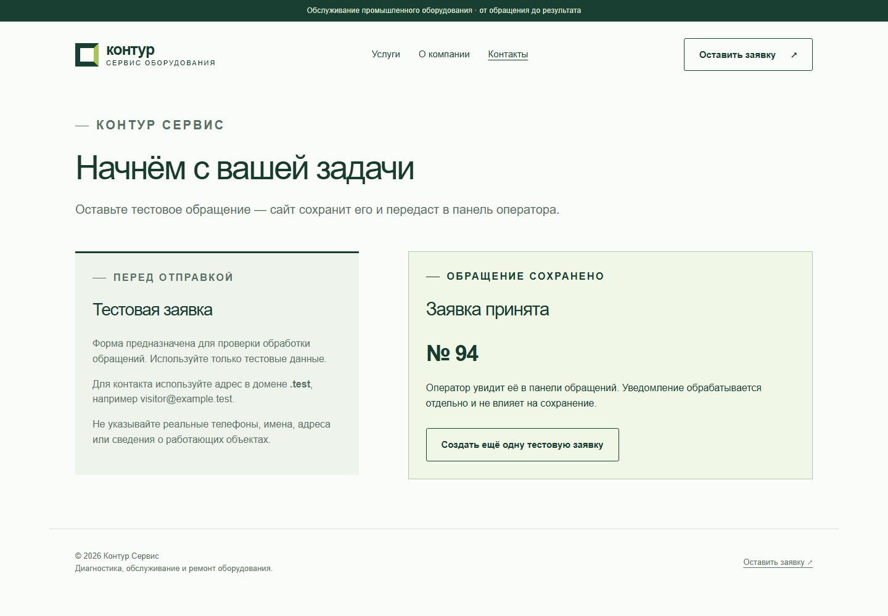
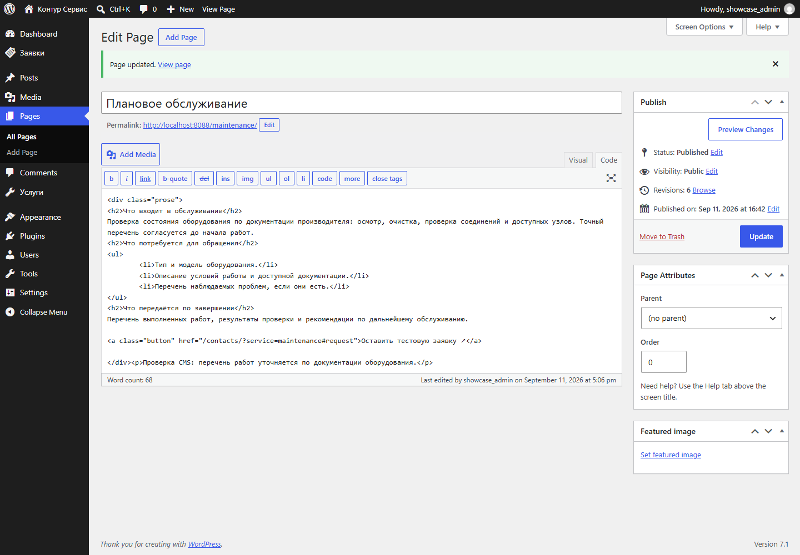
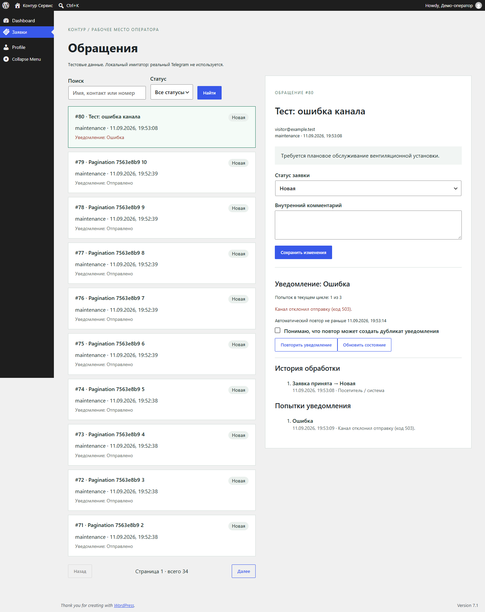
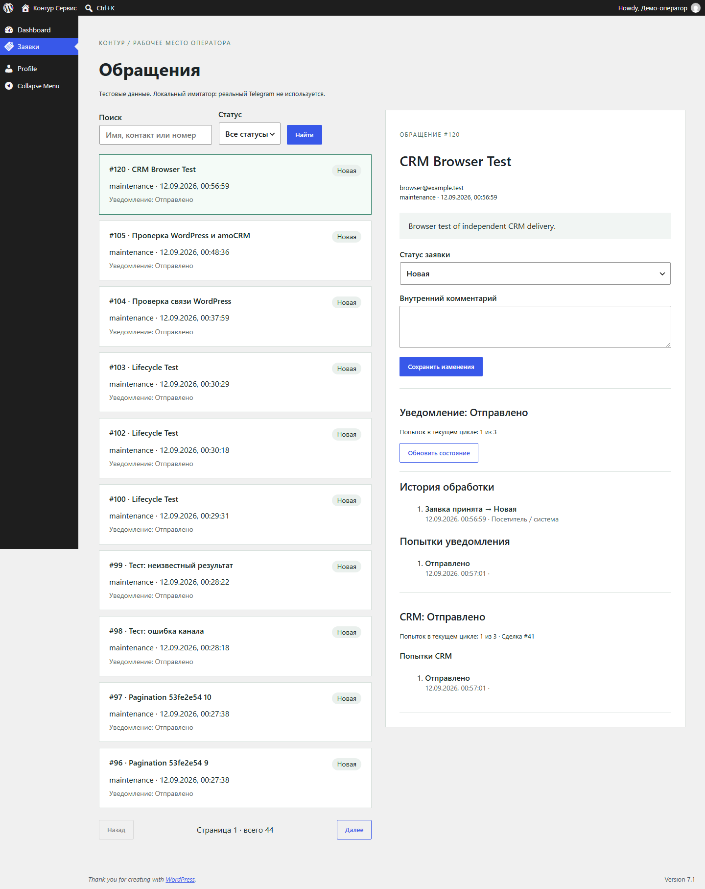

САЙТЫ И АВТОМАТИЗАЦИЯ
Контур Сервис
WordPress, amoCRM и Telegram.
От формы до сделки и уведомления.
Собственный проект: сайт с редактируемыми страницами, форма обращения и доставка заявок в CRM и Telegram. При сбое одного канала обращение остаётся на сайте, а результат отправки виден оператору.

ОСНОВНОЙ СЦЕНАРИЙ
Заявка сохранена. Доставка проверяется отдельно.
- 01 / ПОСЕТИТЕЛЬ
Оставляет заявку
Выбирает услугу и описывает задачу. Форма проверяет поля и после сохранения показывает номер обращения.
- 02 / CRM И TELEGRAM
Получают данные
В amoCRM создаётся сделка с данными обращения, в Telegram приходит уведомление. У каждого канала своя очередь и история попыток.
- 03 / ОПЕРАТОР
Ведёт обращение
Меняет статус, добавляет комментарий и проверяет результат доставки. При ошибке может повторить отправку после сверки с внешним сервисом.
РЕАЛИЗАЦИЯ
CMS и серверная логика.
Пять адаптивных страниц и три услуги. Тексты, услуги и изображение редактируются через штатную CMS WordPress.
- Форма с серверной валидацией и защитой от повторной отправки одного запроса.
- Панель заявок с поиском, фильтром по статусу, пагинацией и историей изменений.
- Разделение прав оператора и администратора; защита от одновременной перезаписи обращения.
- Заявка и задания CRM и Telegram сохраняются в одной транзакции. Отправка выполняется после сохранения.
- Одна сделка amoCRM: идентификатор заявки, контакт, услуга и описание в четырёх дополнительных полях. Перед созданием выполняются поиск и точная сверка идентификатора.
- Ограниченные повторы при временных сбоях. Если результат отправки неизвестен, автоматические повторы останавливаются до проверки оператором.
- Запуск сайта, базы данных и служебных процессов через Docker Compose.
ИНТЕРФЕЙС В РАБОТЕ
Форма, CMS и панель оператора.
Реальные кадры локального приложения с тестовыми данными. На снимках показаны разные обращения и сценарии. Каждый снимок можно открыть целиком.
{kind=link}

{kind=link}

{kind=link}

{kind=link}

{kind=link}

ПРОВЕРКИ
Проверены и обычный сценарий, и отказы.
Связка проверена с реальной amoCRM и собственным Telegram-чатом. Тестовая заявка из обычной формы создала сделку с четырьмя полями; сообщение проверено в Telegram, поля — через API и интерфейс CRM. Повтор формы вернул существующее обращение без новых заданий доставки.
Проверен операторский повтор после отказа CRM: уведомление Telegram было доставлено независимо, затем заявка успешно поступила в CRM. Поиск по идентификатору вернул одну сделку.
Локально пройдены 52 модульные и 42 интеграционные проверки с MariaDB, 8 браузерных сценариев Playwright. Проверены права, повторные запросы, редактирование CMS, ошибки и неопределённый результат отправки. Отдельно проверены сохранность обеих очередей после перезапуска и запрет отправки в режиме просмотра.
ОБЪЁМ ПРОЕКТА
Одна форма и два канала.
Проверен один сайт WordPress, один кабинет amoCRM с основной воронкой, один Telegram-бот и чат. Контакт хранится в поле сделки; отдельная карточка контакта не создаётся. Двусторонняя синхронизация и перенос старых обращений не входят в этот сценарий.
Поиск и создание сделки — отдельные запросы. После неопределённого ответа нужна сверка; полного отсутствия дублей при любых внешних сбоях проект не обещает.
Здесь размещены описание и снимки. Рабочий WordPress запускается отдельно по инструкции в репозитории; для внешних каналов нужны собственные доступы к сервисам.
Источники изображений
Снимки собственного приложения сделаны Playwright. Фото оборудования: Alf van Beem, HVAC Air Handler Unit, pic1.JPG, CC0 1.0. Интерфейс CMS — WordPress, GPLv2 или более поздняя версия.
{kind=link}